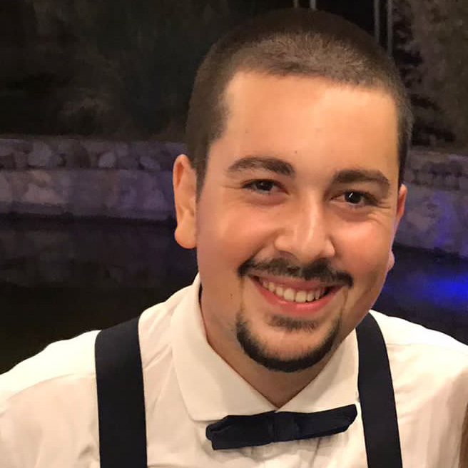

About Me

My name is Efe, and I am from Ayvalik, which is a coastal town on the west side of Turkey. I have spent the majority of my life in Ayvalik. Ayvalik is a small town; almost everyone knows each other. My family owns a coffee shop in Ayvalik where we roast, grind, and sell Turkish Coffee. I have been working in our family business since my early childhood. First I started as a salesperson in our shop. When I started high school, I started to learn the coffee roasting process. Every weekend, I was roasting mainly Turkish Coffee and various other coffees for the given requirements. I gained a significant amount of knowledge and experience during my high school working as a roaster man. Besides that, our company bought a fully automatic packaging machine to pack ground Turkish coffee. I took the responsibility of running and maintaining the packaging machine as well.
In the last year of my education, I was accepted by MSU to study computer science and got a scholarship from Defne Muhtar Kent Educational Foundation. This was the moment when my life changed completely. In the past, I had always dreamed about being a software developer, and this was the moment my dreams came true. Also, I wasn’t alone in the beginning of this new life for me. I have two other friends whom I have known for a very long time. They have also both been accepted to the MSU, and they are also studying computer science. Finally, the journey of new life began for us in the United States at Michigan State University.
Hobbies
- Coffee
- Cycling
- Photographer
- Juggling